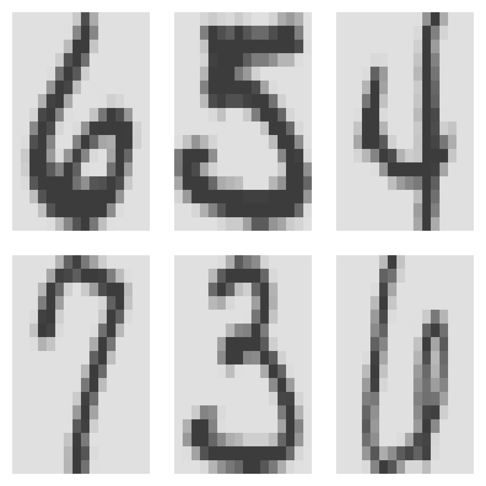
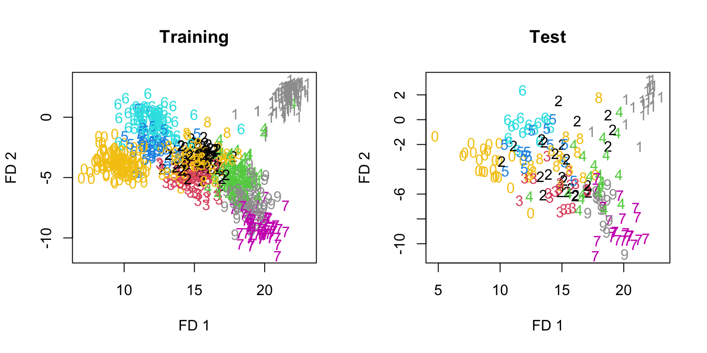
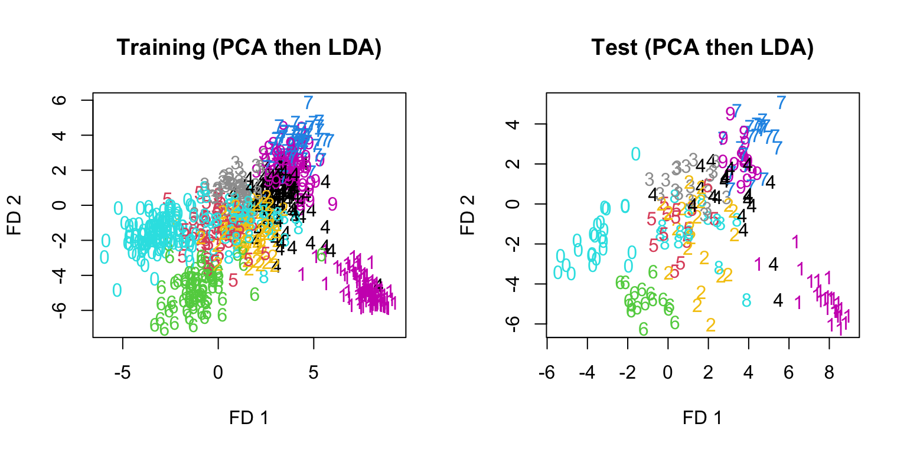

7.4 The Digits Recognition Example
Discriminant analysis in R
The Python version of this section can be found here: Discriminant Analysis in Python .
To make the ideas concrete we use the handwritten ZIP-code digits from The Elements of Statistical Learning. The data originally in ElemStatLearn are now available in tensorBSS. Each observation is a \(16 \times 16\) grayscale image, stored as 256 pixels, together with a label in \(\{0,1,\ldots,9\}\). The task is to classify the digit. We will try LDA, QDA, FDA, and naive Bayes.
The package also provides a proper test set zip.test (\(n = 2007\)). Below we instead draw a small training/test split from zip.train so that the demonstration stays fast; you should feel free to repeat the analysis on the official zip.test.
## Loading required package: JADE## Loading required package: fICA##
## Attaching package: 'e1071'## The following object is masked from 'package:ggplot2':
##
## elementColumn 1 is the digit label; columns 2 through 257 are the pixels. A few training images:
par(mfrow = c(2, 3), mai = c(0.15, 0.15, 0.15, 0.15))
for (i in 1:6) {
digit.img <- matrix(zip.train[i, -1], nrow = 16, byrow = TRUE)
digit.img <- t(digit.img)[, 16:1]
image(1:16, 1:16, digit.img, axes = FALSE, col = gray.colors(256,
rev = TRUE))
}
set.seed(598)
n <- nrow(zip.train)
train.index <- sample(1:n, 800)
remaining.index <- setdiff(1:n, train.index)
test.index <- sample(remaining.index, 200)
train.zip <- zip.train[train.index, ]
test.zip <- zip.train[test.index, ]
X.train <- train.zip[, 2:257]
Y.train <- train.zip[, 1]
X.test <- test.zip[, 2:257]
Y.test <- test.zip[, 1]Linear Discriminant Analysis (LDA)
## [1] 0.845On this particular split the test accuracy is 84.5%. The number will move if you change the seed or the split sizes; the official zip.test is a harder benchmark.
Quadratic Discriminant Analysis (QDA)
A direct call to qda() fails here. With \(p = 256\) pixels and only a few hundred observations per digit, each class covariance is rank-deficient, and MASS::qda does not regularize automatically.
Fisher Discriminant Analysis (FDA)
The matrix lda()$scaling contains the Fisher directions (at most \(K-1 = 9\) of them for ten digits).
## [1] 256 9Project training and test data onto the first two Fisher directions:
F.train <- X.train %*% FDA.digits.directions
F.test <- X.test %*% FDA.digits.directions
par(mfrow = c(1, 2))
plot(F.train[, 1], F.train[, 2], type = "n", xlab = "FD 1", ylab = "FD 2",
main = "Training")
text(F.train[, 1], F.train[, 2], Y.train, col = Y.train + 7)
plot(F.test[, 1], F.test[, 2], type = "n", xlab = "FD 1", ylab = "FD 2",
main = "Test")
text(F.test[, 1], F.test[, 2], Y.test, col = Y.test + 7)
The training cloud (left) looks neatly separated. The test cloud (right) does not reproduce that separation. That gap is overfitting: the nine directions were tuned to the 800 training images.
Feel free to plot other pairs of columns of F.train / F.test; different planes tell different stories.
Computational remarks
We can recover the same directions by forming \(W\) and \(B\) explicitly. A no-intercept dummy regression of the features on the class labels yields residuals \(\mathbf{x}_i - \hat{\mu}_{y_i}\) and fitted values \(\hat{\mu}_{y_i}\):
tmp.lm <- lm(X.train ~ as.factor(Y.train) - 1)
W <- cov(tmp.lm$residuals)
B <- cov(tmp.lm$fitted)
eigenW <- eigen(W, symmetric = TRUE)
## Guard tiny/negative eigenvalues so W^{-1/2} is defined
ev <- pmax(eigenW$values, 1e-08)
A <- eigenW$vectors %*% diag(1/sqrt(ev)) %*% t(eigenW$vectors)FDA.eigen <- eigen(A %*% B %*% t(A), symmetric = TRUE)
FDA.eigen.dir <- A %*% FDA.eigen$vectors[, 1:9]
## Signs of eigenvectors are arbitrary, so correlations may
## be ±1
for (j in 1:9) {
print(cor(FDA.eigen.dir[, j], FDA.digits.directions[, j]))
}## [1] 1
## [1] 1
## [1] 1
## [1] 1
## [1] -1
## [1] 1
## [1] 1
## [1] 1
## [1] 1FDA vs. PCA
PCA ignores the labels. The leading principal axes need not be good separating directions.
Sigma <- cov(X.train)
dig.eigen <- eigen(Sigma, symmetric = TRUE)
PCA.dir <- dig.eigen$vectors[, 1:100]
dim(PCA.dir)## [1] 256 100PCA directions are orthonormal in the usual Euclidean inner product:
## [,1] [,2] [,3] [,4] [,5] [,6] [,7] [,8] [,9] [,10]
## [1,] 1 0 0 0 0 0 0 0 0 0
## [2,] 0 1 0 0 0 0 0 0 0 0
## [3,] 0 0 1 0 0 0 0 0 0 0
## [4,] 0 0 0 1 0 0 0 0 0 0
## [5,] 0 0 0 0 1 0 0 0 0 0
## [6,] 0 0 0 0 0 1 0 0 0 0
## [7,] 0 0 0 0 0 0 1 0 0 0
## [8,] 0 0 0 0 0 0 0 1 0 0
## [9,] 0 0 0 0 0 0 0 0 1 0
## [10,] 0 0 0 0 0 0 0 0 0 1FDA directions are not:
## [,1] [,2] [,3] [,4] [,5] [,6] [,7] [,8] [,9]
## [1,] 112.81 -36.31 -1.72 -74.75 21.61 -23.03 28.10 84.45 25.98
## [2,] -36.31 76.33 10.78 36.52 -16.64 0.05 -63.48 -22.84 -3.74
## [3,] -1.72 10.78 75.85 5.00 4.98 2.03 -18.44 -8.86 1.40
## [4,] -74.75 36.52 5.00 221.53 -15.22 20.63 -0.99 -78.55 -47.91
## [5,] 21.61 -16.64 4.98 -15.22 113.25 -24.92 -8.64 -0.74 -12.94
## [6,] -23.03 0.05 2.03 20.63 -24.92 85.31 36.17 -22.76 -2.01
## [7,] 28.10 -63.48 -18.44 -0.99 -8.64 36.17 217.71 6.06 -2.48
## [8,] 84.45 -22.84 -8.86 -78.55 -0.74 -22.76 6.06 165.63 6.32
## [9,] 25.98 -3.74 1.40 -47.91 -12.94 -2.01 -2.48 6.32 101.53They are orthogonal with respect to \(W\):
## [,1] [,2] [,3] [,4] [,5] [,6] [,7] [,8] [,9]
## [1,] 1 0 0 0 0 0 0 0 0
## [2,] 0 1 0 0 0 0 0 0 0
## [3,] 0 0 1 0 0 0 0 0 0
## [4,] 0 0 0 1 0 0 0 0 0
## [5,] 0 0 0 0 1 0 0 0 0
## [6,] 0 0 0 0 0 1 0 0 0
## [7,] 0 0 0 0 0 0 1 0 0
## [8,] 0 0 0 0 0 0 0 1 0
## [9,] 0 0 0 0 0 0 0 0 1A practical compromise is to reduce dimension with PCA first and then run LDA/FDA in the principal subspace. That often trades a little training separation for a more stable test result.
newX.train <- X.train %*% PCA.dir
newX.test <- X.test %*% PCA.dir
new.digits.lda <- lda(newX.train, Y.train)
Y.test.pred <- predict(new.digits.lda, newX.test)$class
table(Y.test, Y.test.pred)## Y.test.pred
## Y.test 0 1 2 3 4 5 6 7 8 9
## 0 25 0 0 0 0 0 0 0 0 0
## 1 0 25 0 0 0 0 0 0 0 0
## 2 0 0 23 0 0 0 0 0 1 0
## 3 0 0 0 16 0 0 0 1 1 0
## 4 0 2 0 0 18 0 0 0 0 1
## 5 0 0 0 4 0 9 0 0 0 1
## 6 0 0 0 0 0 0 17 0 0 0
## 7 0 0 0 0 0 0 0 20 0 3
## 8 0 1 1 0 2 0 0 0 12 0
## 9 0 0 0 0 0 0 0 2 0 15## [1] 0.1newF <- newX.train %*% new.digits.lda$scaling
newFtest <- newX.test %*% new.digits.lda$scaling
par(mfrow = c(1, 2))
plot(newF[, 1], newF[, 2], type = "n", xlab = "FD 1", ylab = "FD 2",
main = "Training (PCA then LDA)")
text(newF[, 1], newF[, 2], Y.train, col = Y.train + 5)
plot(newFtest[, 1], newFtest[, 2], type = "n", xlab = "FD 1",
ylab = "FD 2", main = "Test (PCA then LDA)")
text(newFtest[, 1], newFtest[, 2], Y.test, col = Y.test + 5)
Training separation is less dramatic after the \(256 \to 100\) compression, but the training and test pictures are more consistent—the usual signature that we have given up some overfit.
Naive Bayes Prediction
As a high-dimensional baseline we fit Gaussian naive Bayes to a two-class slice (digits 1 versus 7), using e1071::naiveBayes. Restricting to two classes makes the confusion matrix easy to read; the same function will run on all ten digits.
zip17 <- train.zip[train.zip[, 1] %in% c(1, 7), ]
zip17.test <- test.zip[test.zip[, 1] %in% c(1, 7), ]
Y.17 <- as.factor(zip17[, 1])
X.17 <- zip17[, -1]
NBfit <- naiveBayes(X.17, Y.17)
y_pred <- predict(NBfit, zip17.test[, -1])
acc.nb <- mean(y_pred == zip17.test[, 1])
acc.nb## [1] 0.9791667## Actual
## Predicted 1 7
## 1 25 1
## 7 0 22